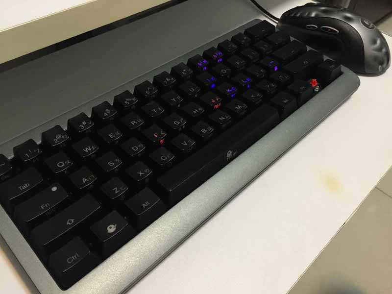

因为家里书桌空间的关系，没办法把 100% 大键盘与滑鼠放在一起，所以就兴起来买小键盘的想法，一开始 Google 发现，原来现在早就有 80%, 60% 两种较小的键盘，身为一个软体工程师，每天都在敲键盘，旧键盘也用了五年了，该是把它换掉的时候了，我后来买了 60% Ducky mini 小键盘。
(右边的 Win 键，因为用不到，有时会按错，所以就拔掉了，另外我有交换 win & FN 键)
这把键盘没有方向键，也没有 PageUP, PageDown, Home, End ，也没有 F1 ~F12 键，不过你可以搭配 "FN" 键盘加上 0~9 ，就可以输出 F1~F12 ，也可以用 "FN" + okl; 键，输出上下左右方向键。
我个人在家里是使用 Windows ，而在公司则是用 Mac ，编辑器则是选用 Vim ，一开始用这把小键盘时，非常的不习惯，因为没有方向键，造成我要用拇指按 FN ＋上中指无名指按 ojkl 来控制方式，以前我都是用 食指、中指、无名指来按方向键的，现在变成非常不习惯，中间一度去下载 Ducky mini 最新的韧体更新，新版的韧体支援将右边的 shift, fn,win, ctrl 换成上下左右，不过这个改法造成右边的 shift 不能使用，这个键对软体工程师来说，应该非常容易被按到，因为程式码有很多符号都在键盘的右边，而且要按 shift 才能输出，我后来决定自已来设定热键。
- https://www.facebook.com/3C.iqmore/posts/1059498757426033 这里有 Ducky mini 的方向键韧体下载。
安装软体改热键
每个人的使用习惯都不同，手感也不同，我先说明我个人的使用状况，各位看倌再看看适不适用在你身上。
1. 第一点非常很重要，就是我打字的时候，是没办法完全不看键盘，所以我的手指不会一直固定在 F,J ，如果你是打字高手，可能就不适用我的热键设定。
2. 我打字时，不会按照标准的指法来按，例如我会用右手无名指按 P ，左手食指按 C。
3. 改热键的时候，我有尽可能让我的手指不要大范围移动。
如果你打字习跟我有像的话，可以直接使用我的设定，不然就自已在微调罗。
Windows Autohotkey
Windows 用户要先下载 Autohotkey 这套软体
这里有我 Autohotkey 的设定。
https://docs.google.com/document/d/18TkJoCmiUK-VhDlVaFdQHlLGEHUsbvnIbpbu9SuUAtE/edit?usp=sharing
- 右边 ALT + i j k l 为方向键
- 左边 CTRL + 右边 ALT + j l 为 Home 与 End
- 左边 CTRL + 右边 ALT + i k 为 PageUp 与 PageDown
- 左边 ALT + "空白键" m , . j k l u i o 为数字键从 0 ~ 9 (摸拟数字键盘)
- 左边 CTRL + Backspace 为 forward delete 。
- 左边 ALT + Q W 为控制 chrome 切换左右 Tab。
- 右边 ALT + , . 为 delete 与 forward delete
- 左边 ALT + e d c 为 $, "" , '' ，输出单双引号，并将游标至中间。
- 左边 ALT + r f 为 () {} ，输出括号，并将游标至中间。
- 左边 ALT + Z X 为控制 terminal screen 切换。
- 模拟 HHKB 键盘，将 右边 Ctrl + [;'/ 键改成方向键。
Mac karabiners
Mac 用户请先下载 karabiners 这套软体，再参考我的 XML 设定。
https://drive.google.com/file/d/0B1_zQGB-Kb7mN3Q3QkZWam5BY1k/view?usp=sharing
热键的设定跟 Windows 差不多，目要是为了支援 Mac，将 private.xml 覆盖到 ~/Library/Application Support/karabiners/private.xml 即可，接著在 karabiners 点击 reload xml ，并记得 打勾我新加的 "ducky mini" 相关的几个热键 Group。
还有我使用 Mac 的时候，会交换 Command 与 Ctrl 键，所以这组热键设定在 Karabiners 也会有点奇怪，就是我要将 control 重新 map 回 command。
- 右边 ALT + i j k l 为方向键
- 左边 CTRL + 右边 ALT + j l 为 Home 与 End
- 左边 CTRL + 右边 ALT + i k 为 PageUp 与 PageDown
- 左边 ALT + "空白键" m , . j k l u i o 为数字键从 0 ~ 9 (摸拟数字键盘)
- 左边 CTRL + Backspace 为 forward delete 。
- 左边 ALT + Q W 为控制 chrome 切换左右 Tab。
- 左边 ALT + Z X 为控制 terminal screen 切换。
- 模拟 HHKB 键盘，将 右边 Ctrl + [;'/ 键改成方向键。